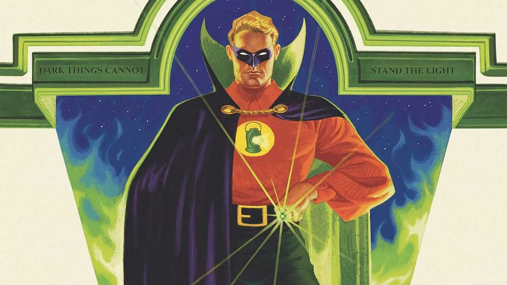

In-Universe History · 1940
The First Lantern of Earth
Alan Scott finds the Starheart — wild magic, not Corps tech.

1940
The story
Long before Hal Jordan, before the Corps knew Earth existed, a railroad engineer named Alan Scott survived a train wreck by clutching a strange green lantern — a flame that spoke to him and told him to forge a ring.
The Starheart is not Corps technology. It's wild magic, older than the Guardians' science, a chunk of chaotic green flame. Alan wielded it through the Golden Age as the first Green Lantern of Earth, and his light burned for years before the Corps ever came calling.
He's the proof that the green light is bigger than any institution — willpower finds a way, with or without Oa's permission.